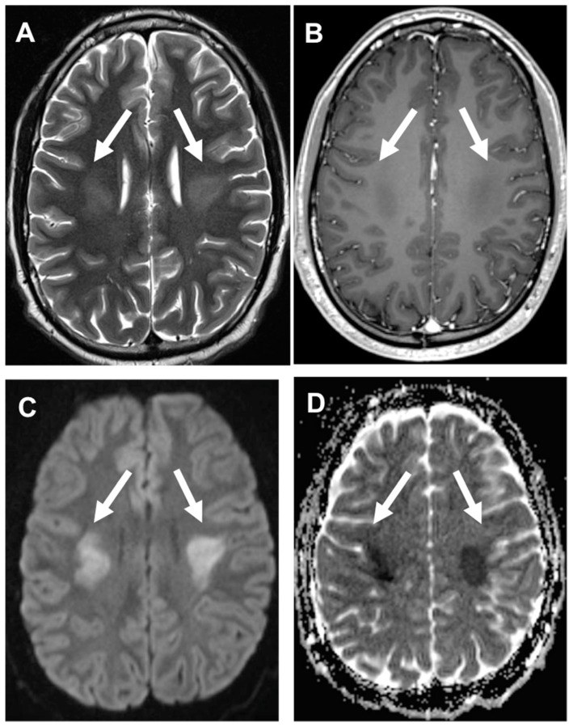
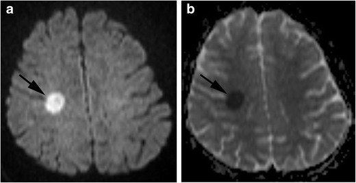
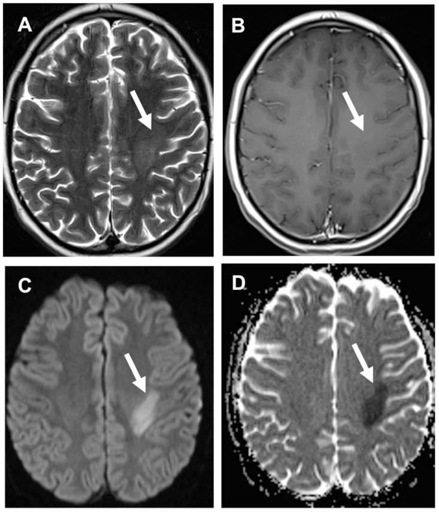
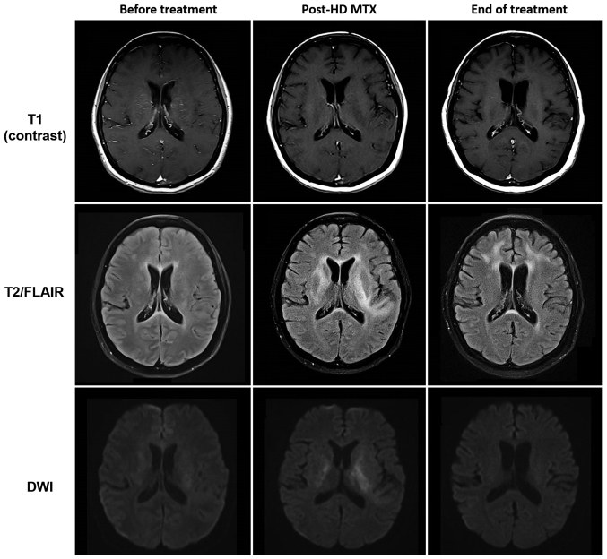

1423 — Độc tính của methotrexate nội tủy: viêm màng não hóa học, bệnh não chất trắng cấp & ức chế tủy / Intrathecal methotrexate neurotoxicity: chemical meningitis, acute leukoencephalopathy, myelosuppression
Tags: pattern:ton-thuong-chat-trang pattern:han-che-khuech-tan vung:chat-trang score:CTCAE protocol:MRI-DWI protocol:choc-DNT
Mức chắc chắn (certainty): tổng hợp y văn (literature synthesis) — ghép 1 đoàn hệ 1.251 trẻ ALL (Haematologica 2022, PMC8883571, CC BY-NC 4.0), 1 đoàn hệ 33 trẻ (2023, PMID 37565568 — chỉ trích số liệu), 1 tổng quan điều trị (2025, PMC11981439, CC BY 4.0), 1 tổng quan biến chứng TKTW ở trẻ (Cancers 2022, PMC8946171, CC BY 4.0), 1 ca viêm màng não vô khuẩn sau IT MTX (2022, PMC9484505, CC BY-NC-SA 4.0) và 1 ca quá liều nội tủy 240 mg (2018, PMID 30672361 — chỉ trích số liệu). Số nào nguồn không đưa thì ghi "chưa rõ", không bịa.
Bài này trả lời 4 câu hỏi của buổi trực có bệnh nhân vừa được tiêm MTX nội tủy: (1) Đau đầu + sốt + cứng gáy sau tiêm 6–48 giờ — viêm màng não hóa học hay nhiễm khuẩn? (2) Yếu nửa người/sốc giọng 3–8 ngày sau liều — đột quỵ thật hay bắt chước đột quỵ? (3) Có được tiêm lại (re-challenge) và có được bỏ MTX nội tủy không? (4) Bao giờ thì ức chế tủy đủ nặng để hoãn liều và xử trí quá liều thế nào? Khác với 494 – MTX leukoencephalopathy (thể mạn/di chứng hình ảnh ở người lớn sau điều trị PCNSL, tập trung vào phân biệt tái phát u) và 1421 – theo dõi nhận thức: bài này lo phần cấp tính của chính đường nội tủy — màng não, tủy xương, và ngưỡng hoãn/giảm liều.
1. Tổng quan bệnh học – cơ chế hình ảnh
1.1 Vì sao MTX nội tủy vừa "đánh vào màng não" vừa "đánh vào chất trắng"
- MTX là kháng folate: vào tế bào qua reduced folate carrier (RFC), bị polyglutamate hóa, ức chế dihydrofolate reductase (DHFR) → cạn FH4 → ngừng tổng hợp purine + thymidine. Hệ quả sinh hóa đo được: homocysteine tăng, adenosine và các axit amin kích thích (excitatory amino acids) tăng — đây là nền của cả độc tính myelin và kích thích thần kinh (co giật).
- Đường nội tủy đưa thuốc trực tiếp vào khoang dưới nhện: nồng độ đỉnh trong dịch não tủy (DNT) cao gấp nhiều lần đường tĩnh mạch, thanh thải khỏi DNT chậm (phụ thuộc dòng dịch và resorption qua hạt màng nhện) → niêm mạc màng não và lớp myelin dưới vỏ tiếp xúc nồng độ cao trong nhiều giờ. Đó là lý do độc tính màng não (hóa học) và độc tính chất trắng cùng tồn tại ở một bệnh nhân.
- Viêm màng não hóa học (chemical/aseptic meningitis): phản ứng viêm không nhiễm trùng của màng não với pH, tá dược (preservative), nồng độ thẩm thấu và bản thân thuốc, khởi phát vài giờ đến 72 giờ sau tiêm; hình ảnh học thường bình thường — chẩn đoán nằm ở DNT.
- Bệnh não chất trắng nhiễm độc cấp (acute toxic leukoencephalopathy — MTX-LEP): tổn thương myelin (myelin pallor, myelin vacuolation), phù nội bào của myelin và tế bào hình sao → giảm khoảng ngoại bào → hạn chế khuếch tán trên DWI/ADC.
- TẠI SAO DWI sáng + ADC tối mà T2/FLAIR lại bình thường trong 24–72 giờ đầu: phù myelin là phù nội bào — nước chuyển từ khoảng ngoại bào vào trong tế bào/myelin, làm giảm chuyển động ngẫu nhiên của phân tử nước (ADC thấp) trong khi tổng lượng nước mô chưa tăng đủ để đổi tín hiệu T2. Vì vậy DWI dương tính trước T2/FLAIR khoảng 1–2 tuần; đây là lý do bắt buộc chụp DWI/ADC ở lần chụp đầu.
- TẠI SAO không theo lãnh thổ mạch và chừa vỏ não: tổn thương do thuốc khu trú ở chất trắng sâu có tốc độ chuyển hóa/myelin cao (trung tâm bán bầu dục, vành tia, thể chai), không phụ thuộc tưới máu động mạch; vỏ não (chất xám) hầu như không bị. Đây là chốt loại mạnh nhất để không tiêu sợi huyết oan.
1.2 Ngưỡng định lượng nằm lòng (bắt buộc nhớ)
| Đại lượng | Con số | Nguồn |
|---|---|---|
| Độc tính thần kinh MTX có triệu chứng ở trẻ ALL | 7,6% (95/1.251), trung vị 4 tháng từ chẩn đoán, 8 ngày sau liều IV/IT | PMC8883571 |
| Cùng biến cố ở một đoàn hệ khác | 1,25% (33 trẻ), stroke-like 36,4% (12/33), co giật 30,3% (10/33), 23 ca có hình ảnh LEP | PMID 37565568 |
| Tần suất MTX-LEP nói chung | 3–10%, phụ thuộc liều/đường/lịch | PMC11981439 |
| Yếu tố nguy cơ độc lập | tuổi ≥ 10; AST độ 3 trong tấn công/củng cố: OR 2,31 (1,28–4,16), P = 0,005 | PMC8883571 |
| Tái phát khi tiếp tục IT MTX | 12,9% | PMC8883571 |
| Bỏ IT MTX sau biến cố đầu | sống không tái phát TKTW 5 năm 89,2% vs 95,4% (P = 0,047) | PMC8883571 |
| Thời gian hồi phục lâm sàng điển hình | vài giờ–3 ngày; hình ảnh hồi phục ~3 tuần | PMC11981439 |
| Quá liều nội tủy (ca nguyên văn) | 240 mg thay vì 12 mg (20 lần) → co giật, viêm màng nhện độc | PMID 30672361 |
| Ngưỡng xử trí quá liều IT MTX | < 100 mg**: ít can thiệp; **100–500 mg**: rửa/thay DNT; **> 500 mg: can thiệp không hiệu quả | PMID 8689347 |
| Cấm | leucovorin nội tủy — ca tử vong sau 20 mg IT MTX + leucovorin IT | PMID 8689347 |
- DNT trong viêm màng não hóa học (ca điển hình): 24% bạch cầu hạt trung tính, 60% lympho, 3% đại thực bào, cấy âm, PCR HSV/VZV/Lyme/West Nile âm, glucose bình thường. Tế bào tăng nhưng không có vi khuẩn — chốt loại nhiễm trùng chỉ khi cấy + PCR âm và bệnh nhân không có ổ nhiễm (xem cạm bẫy ở mục 5).
2. Mẫu hình + chẩn đoán phân biệt theo vị trí (gamut)
Mẫu hình A — "đột quỵ bắt chước" ở trẻ đang điều trị ALL:
- Đối xứng hai bên, vành tia/trung tâm bán bầu dục → MTX-LEP (thể đối xứng); phân biệt PRES (ưu thế chẩm–đỉnh, T2/FLAIR nổi bật, thường không hạn chế khuếch tán trừ khi nặng), bệnh mạch máu nhỏ do xạ (chỉ khi có tiền sử xạ, tiềm tàng nhiều tháng–năm).
- Một bên, dạng đốm < 20 mm, chừa vỏ não, không theo lãnh thổ → MTX-LEP thể khu trú; phân biệt nhồi máu động mạch (theo lãnh thổ, có vỏ não, T2/FLAIR đổi sớm hơn, mạch lớn bất thường trên MRA), huyết khối xoang/tĩnh mạch (nhồi máu tĩnh mạch + xuất huyết, MRV tắc), di căn/tái phát u (ngấm thuốc, phù, choán chỗ).
- Quanh não thất + thể chai → MTX-LEP, cũng gặp trong viêm não tự miễn, ADEM (bệnh sử vaccine/nhiễm trước đó).
Mẫu hình B — "màng não" sau tiêm 0–72 giờ:
- Đau đầu + sốt + cứng gáy, DNT tăng tế bào, glucose bình thường → viêm màng não hóa học; phân biệt viêm màng não vi khuẩn ở trẻ giảm bạch cầu hạt (có thể rất ít tế bào vì không có bạch cầu để tạo mủ — bẫy chết người), viêm màng não do virus, xuất huyết dưới nhện (DNT đỏ, xanthochromia), bệnh màng não do bạch cầu (tế bào ác tính trong DNT).
- Không sốt, chỉ đau lưng/đau đầu thoáng qua sau tiêm → phản ứng thoáng qua, không cần chọc lại.
Gamut theo cơ chế (nhớ nhanh): Myelotoxicity (ức chế tủy), Encephalopathy (chất trắng), Neuropathy/myelopathy (tủy sống — hiếm, sau IT nhiều lần), Infection (phải loại trước), Nausea/headache (hội chứng sau chọc dò), Gliosis/leukoencephalopathy muộn, Iatrogenic overdose, Thrombosis (xoang), Ischemic stroke thật, Seizure.
3. Bảng so sánh phân biệt (ma trận đối chiếu)
| Thực thể (entity) | Hình ảnh điển hình | Chốt vào (rule-in) | Chốt loại (rule-out) | Gợi ý xác nhận |
|---|---|---|---|---|
| MTX-LEP cấp (stroke-like) | DWI sáng + ADC tối, chất trắng sâu, đối xứng hoặc một bên dạng đốm, chừa vỏ não, không ngấm thuốc, T2/FLAIR có thể bình thường 24–72 giờ | Hạn chế khuếch tán + không theo lãnh thổ + chừa vỏ + xuất hiện 3–8 ngày sau liều MTX | Có vỏ não + theo lãnh thổ + tắc mạch trên MRA → nhồi máu thật | DWI/ADC trong 24–72 giờ; lặp lại 2–4 tuần thấy hồi phục |
| Nhồi máu động mạch cấp | Hạn chế khuếch tán theo lãnh thổ, gồm vỏ não, T2/FLAIR đổi sớm hơn, mạch lớn có thể tắc | Territorial + cortex + tắc mạch trên MRA/CTA | Chừa vỏ, hai bên đối xứng, không lãnh thổ → không phải nhồi máu | MRA/CTA, siêu âm tim nếu trẻ có bệnh tim |
| Viêm màng não hóa học do IT MTX | MRI thường bình thường; có thể ngấm màng não nhẹ, giãn não thất thoáng qua | DNT tăng tế bào, glucose bình thường, cấy/PCR âm, khởi phát < 72 giờ sau tiêm, tự khỏi 2–4 ngày | Glucose thấp + cấy dương + bệnh nặng lên → nhiễm khuẩn | DNT + cấy + PCR; theo dõi 48–72 giờ |
| Viêm màng não vi khuẩn ở trẻ giảm BC hạt | Màng não ngấm thuốc, ổ áp-xe, giãn não thất | Sốt + neutropenia + CRP/PCT tăng + cấy dương | DNT có thể chỉ vài tế bào → không được loại trừ bằng tế bào thấp | Cấy máu + DNT, kháng sinh theo giờ |
| PRES | T2/FLAIR tăng ưu thế chẩm–đỉnh, đối xứng, thường không hạn chế khuếch tán; xuất huyết điểm có thể có | Tăng huyết áp + thuốc ức chế miễn dịch/tacrolimus + phân bố chẩm–đỉnh | Hạn chế khuếch tán đơn độc ở vành tia, HA bình thường → nghĩ MTX-LEP | MRI + theo dõi HA; hồi phục sau kiểm soát HA |
| Huyết khối xoang tĩnh mạch | Nhồi máu không theo lãnh thổ động mạch, thường có xuất huyết, xoang tăng tín hiệu/T2* tối | MRV/CTV tắc xoang + nhồi máu tĩnh mạch + xuất huyết | Hạn chế khuếch tán đối xứng, không xuất huyết, MRV bình thường → loại | MRV/CTV |
| Tái phát u / di căn màng não | Khối ngấm thuốc, phù, choán chỗ; màng não dày ngấm; tế bào ác tính trong DNT | Ngấm thuốc + phù + lớn dần; tế bào học DNT dương | DWI đốm không ngấm, tự hết 3 tuần → không phải u | T1+Gd, tế bào học DNT, PET nếu cần |
| Di chứng xạ trị (RIL) | T2/FLAIR tăng lan tỏa quanh não thất–sâu, không hạn chế khuếch tán, tiến triển > 6 tháng sau xạ | Tiền sử xạ + tiềm tàng nhiều tháng + không hạn chế khuếch tán | Khởi phát 3–8 ngày sau MTX → không phải RIL | So sánh mốc thời gian; xem 261 |

Bốn ô của cùng một trẻ ALL sau MTX: (A) T2 — tăng tín hiệu vành tia hai bên; (B) T1 sau tiêm — không ngấm thuốc; (C) DWI — sáng đối xứng; (D) ADC — tối, tức hạn chế khuếch tán thật. Nguồn: Cancers 2022 (PMC8946171), CC BY 4.0.Ba câu hỏi đọc phim theo thứ tự
- Có hạn chế khuếch tán thật không? DWI sáng và ADC tối; DWI sáng + ADC sáng = hiệu ứng T2 shine-through (không phải phù độc).
- Có theo lãnh thổ mạch/có vỏ não không? Có → nhồi máu; không → thuốc/độc/chuyển hóa.
- Mốc thời gian so với liều MTX? 3–8 ngày sau liều = MTX-LEP; > 6 tháng sau xạ = RIL; vài giờ–3 ngày + sốt = viêm màng não hóa học.
4. Protocol chụp + phân độ + ngưỡng xử trí
4.1 Protocol MRI khi có biến cố thần kinh
- DWI (b = 1.000) + ADC map ngay — bắt buộc, không thay bằng FLAIR.
- FLAIR + T2 + T1 ± gadolinium + SWI/T2*: SWI để loại xuất huyết (đốm tối) và huyết khối; T1+Gd để loại u/tái phát.
- MRA (TOF) + MRV khi triệu chứng đột quỵ: phân biệt nhồi máu thật/huyết khối xoang.
- Thời điểm: trong 24–72 giờ đầu (DWI dương trước T2); lặp lại 2–4 tuần — hồi phục hạn chế khuếch tán là bằng chứng ủng hộ MTX-LEP.
- Không cần cản quang khi chỉ có sốt + đau đầu + DNT điển hình (tránh thêm thủ thuật), nhưng phải chụp nếu có dấu thần kinh khu trú, co giật kéo dài, hoặc tri giác giảm.
4.2 Phân độ và ngưỡng xử trí (thực hành, không phải RADS)
- Độc tính thần kinh theo CTCAE: độ 1 (nhẹ, không can thiệp) → độ 2 (giới hạn sinh hoạt) → độ 3 (nặng, cần can thiệp/nhập viện) → độ 4 (đe dọa tính mạng) → độ 5 (tử vong). Ghi độ vào hồ sơ mỗi biến cố để so sánh giữa các đợt.
- Viêm màng não hóa học: điều trị hỗ trợ (giảm đau, hạ sốt, dịch); dexamethasone theo phác đồ nếu đau đầu nặng; không dùng kháng sinh kéo dài khi cấy/PCR âm và bệnh nhân không giảm bạch cầu hạt — nhưng ở trẻ neutropenic, kháng sinh theo giờ cho tới khi loại trừ nhiễm khuẩn.
- MTX-LEP: ngừng/hoãn liều tiếp theo, leucovorin (acid folinic) theo phác đồ, theo dõi thần kinh; không tiêu sợi huyết; hồi phục thường trong vài ngày–3 tuần.
- Quá liều nội tủy: gọi ngay kíp ung thư + can thiệp; rút/thay DNT (CSF exchange) sớm; glucarpidase (carboxypeptidase-G2) nội tủy nếu có; leucovorin tĩnh mạch liều cao; corticoid; tuyệt đối không leucovorin nội tủy.
- Ngưỡng hoãn liều IT (thực hành, chưa có RCT — mức chắc chắn: suy luận): ANC < 0,5 × 10⁹/L, tiểu cầu < 50 × 10⁹/L, sốt đang hoạt động, hoặc DNT còn tăng tế bào chưa giải thích; ghi rõ lý do hoãn và hẹn tiêm lại, không bỏ hẳn IT (xem 1.2: bỏ IT làm tăng tái phát TKTW).
flowchart TD
A[Trẻ ALL có biến cố thần kinh sau liều MTX nội tủy] --> B{Có sốt, đau đầu, cứng gáy trong 72 giờ?}
B -->|Có| C[Chọc DNT: tế bào, protein, glucose, Gram, cấy, PCR]
C --> D{Glucose thấp hoặc cấy/PCR dương?}
D -->|Có| E[Điều trị nhiễm khuẩn ngay - không chờ]
D -->|Không| F[Viêm màng não hóa học: điều trị hỗ trợ, theo dõi 48-72 giờ]
B -->|Không, có dấu khu trú hoặc co giật| G[MRI: DWI + ADC + FLAIR + SWI + MRA/MRV]
G --> H{Hạn chế khuếch tán thật?}
H -->|Không| I[Tìm nguyên nhân khác: PRES, huyết khối, tái phát u]
H -->|Có| J{Theo lãnh thổ mạch và có vỏ não?}
J -->|Có| K[Nhồi máu thật: MRA/CTA, xử trí đột quỵ]
J -->|Không| L[MTX-LEP: hoãn liều, leucovorin, chụp lại 2-4 tuần]
5. Biến thể bình thường và cạm bẫy
- DWI sáng do T2 shine-through: ổ nhầy/dịch kén, u có T2 rất sáng → luôn đọc kèm ADC; chỉ gọi hạn chế khuếch tán khi ADC tối.
- Hematoma/áp-xe cũng hạn chế khuếch tán: máu cấp và mủ có ADC thấp; phân biệt bằng SWI/T2* (máu), ngấm viền + mức dịch (áp-xe), sốt + ổ nhiễm.
- "Satisfaction of search" sau khi thấy ổ đột quỵ giả: phải soát xoang tĩnh mạch, màng não, não thất — bệnh nhân ALL có thể vừa huyết khối xoang vừa MTX-LEP.
- Viêm màng não hóa học có thể tái diễn sau mỗi liều — đừng đổi sang kháng sinh kéo dài; ghi nhận và tiền mê dexamethasone theo phác đồ nếu được chỉ định.
- Trẻ giảm bạch cầu hạt: DNT có thể "sạch" giả tạo — số tế bào thấp không loại trừ nhiễm khuẩn; dựa vào Gram, cấy, CRP/PCT, diễn tiến 6–12 giờ.
- Hình ảnh có thể âm tính trong 24 giờ đầu — MRI bình thường không loại trừ MTX-LEP; chụp lại nếu triệu chứng tiếp diễn.
- Không nhầm MTX-LEP với tái phát u để xạ lại/mổ — tổn thương không ngấm thuốc, tự hồi phục; sinh thiết trong giai đoạn cấp có thể gây hại.
- Ommaya reservoir: nhiễm trùng/dò dịch quanh reservoir là hàng DDx của "đau đầu sau tiêm" — khám vùng da đầu, siêu âm/CT nếu sưng.
6. Tự lượng giá — Blind Quiz
Ca 1 — Bé gái 14 tuổi ALL, yếu nửa người trái 5 ngày sau liều MTX nội tủy thứ ba.

- Gợi ý: không sốt, không đau đầu; khám có yếu nửa người trái, tri giác tỉnh.
- Hỏi: ổ tổn thương ở đâu, kích thước bao nhiêu? DWI/ADC nói gì? Có nên tiêu sợi huyết không?
Bấm để hiện đáp án (findings + chẩn đoán)
- Findings: ổ ~10 mm tăng tín hiệu trên DWI (a) và giảm tín hiệu trên ADC (b) ở trung tâm bán bầu dục phải, không theo lãnh thổ mạch, không chạm vỏ não.
- Chẩn đoán: MTX-LEP cấp (stroke-like) — phù myelin nội bào gây hạn chế khuếch tán; không phải nhồi máu.
- Xử trí: không tiêu sợi huyết, hoãn liều IT, leucovorin theo phác đồ; chụp lại 2–4 tuần thấy hồi phục.
- Nguồn: Insights Imaging 2018 (PMC5991004), CC BY 4.0.
Ca 2 — Bé trai 9 tuổi ALL, co giật cục bộ rồi liệt nửa người phải 6 ngày sau MTX tĩnh mạch liều cao + nội tủy.

- Gợi ý: HA bình thường, không sốt, không rối loạn đông máu.
- Hỏi: tổn thương đối xứng hay một bên? Chuỗi nào chốt chẩn đoán? Chẩn đoán phân biệt thứ hai là gì?
Bấm để hiện đáp án (findings + chẩn đoán)
- Findings: (A) T2 tăng tín hiệu một bên vành tia/trung tâm bán bầu dục trái; (B) T1 sau tiêm không ngấm; (C) DWI sáng; (D) ADC tối.
- Chẩn đoán: MTX-LEP thể khu trú — hạn chế khuếch tán một bên, chừa vỏ, không ngấm thuốc.
- DDx thứ hai: nhồi máu động mạch (loại vì không theo lãnh thổ, không có vỏ não, MRA bình thường) và huyết khối xoang (loại vì MRV bình thường, không xuất huyết).
- Nguồn: Cancers 2022 (PMC8946171), CC BY 4.0.
Ca 3 — Bệnh nhân 46 tuổi u lympho, co giật + múa vờn (choreoathetosis) sau liều MTX liều cao; ảnh chụp trước điều trị, sau liều và cuối đợt.

- Gợi ý: triệu chứng xuất hiện vài ngày sau liều, sau đó giảm dần mà không can thiệp mạch.
- Hỏi: tổn thương ở đâu, có ngấm thuốc không? Vì sao ảnh cuối đợt gần như bình thường?
Bấm để hiện đáp án (findings + chẩn đoán)
- Findings: hàng giữa (T2/FLAIR) — vùng tăng tín hiệu quanh não thất/vành tia bên trái xuất hiện sau liều MTX; hàng dưới (DWI) — sáng tương ứng; hàng trên (T1+Gd) — không ngấm; ảnh cuối đợt hồi phục gần hoàn toàn.
- Chẩn đoán: bệnh não chất trắng nhiễm độc methotrexate có hồi phục — phù myelin, không phải nhồi máu/không phải tái phát u.
- Điểm dạy: chuỗi ảnh theo thời gian là bằng chứng mạnh nhất; không cần sinh thiết.
- Nguồn: Mol Clin Oncol 2019 (PMC6719254), CC BY 4.0.
Bài liên quan chéo
- 494 – Độc thần kinh methotrexate: hình ảnh & phân biệt tái phát
- 1421 – Theo dõi nhận thức sau độc tính MTX
- 462 – U lympho nội nhãn (PVRL)
- 261 – Bệnh não chất trắng do xạ trị
- 268 – Bệnh tủy do xạ trị
- 204 – Hoại tử phóng xạ sau xạ trị u não
Ảnh
- 4 ảnh, tất cả CC BY 4.0, không crop, không ghép; nguồn + giấy phép từng file trong
images/CREDITS.md.
Không dùng để chẩn đoán độc lập khi chưa có người hướng dẫn.